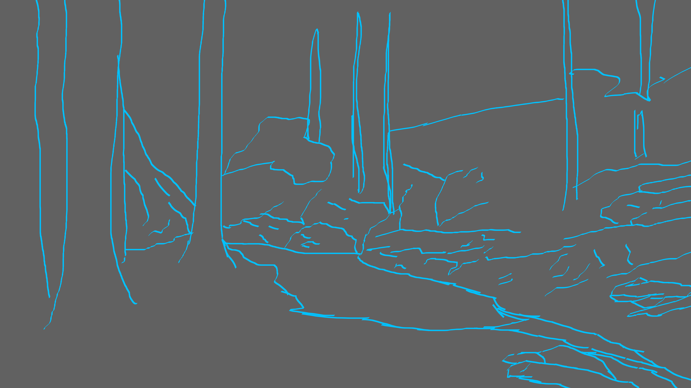

Concept Art
Showcase of Concept Art for both early development stages/final development.
The Creek
For this project I was inspired by *The Last of Us Part II* — a game filled with emotional storytelling and quiet, beautiful exploration moments. I wanted to capture that peaceful side of the world, walking through the forest.


